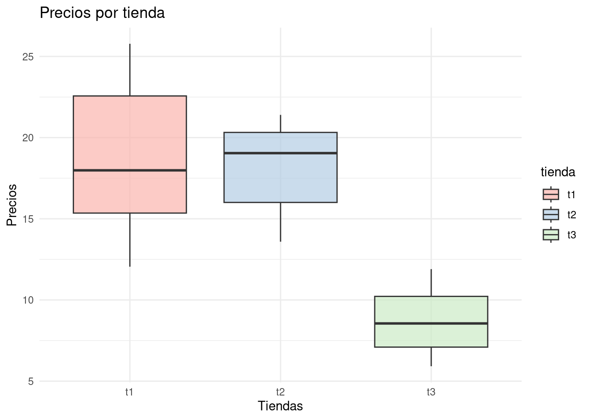

ANOVA, o Análisis de la Varianza, es un método estadístico utilizado para analizar las diferencias entre las medias de varios grupos en una muestra (\(k>2\)). Prueba la hipótesis nula de que las medias de múltiples grupos son iguales, comparando la varianza entre las medias de los grupos (\(S^2_{E}\)) con la varianza dentro de los grupos (\(S^2_{D}\)). La ANOVA se utiliza frecuentemente para analizar los efectos de variables independientes categóricas (factores) en una variable dependiente continua (Diseños Experimentales) . Proporciona un estadístico F- y un valor p** para determinar si las medias de los grupos son significativamente diferentes. Si el valor p es menor que un nivel de significancia elegido, típicamente 0,05, se rechaza la hipótesis nula, lo que indica que al menos una de las medias de los grupos es diferente de las demás y en consecuencia se deben realizar pruebas adicionales para determinar que grupos son diferentes (pruebas de comparaciones múltiples).
\(Ho: \mu_1 = \mu_2 = \dots \mu_k\)
\(Ha: \text{alguna } \mu_i \text{ es
diferente}\)
Para la construcción del Estadístico de Prueba se plantea la siguiente tabla
ANOVA
| Fuentes de variación | Suma de cuadrados | grados de libertad | Cuadrados medios | F | valor-p |
|---|---|---|---|---|---|
| Grupos Entre | \(SC_{E} = n \displaystyle\sum_{j=1}^k (\bar{x_{j}} - \bar{\bar{x}})^2\) | \(k-1\) | \(CM_{E} = \dfrac{SC_{E}}{gl_{E}}\) | \(F = \displaystyle\dfrac{CM_{E}}{CM_{D}}\) | qf(F,v1,v2) |
| Grupos Dentro | \(SC_{D} = \displaystyle\sum_{j=1}^{m} \sum_{i=1}^{n} (x_{ij} - \bar{x_{j}})^2\) | \(k(n-1)\) | \(CM_{D} = \dfrac{SC_{D}}{gl_{D}}\) | ||
| Total | \(SCT = \displaystyle \sum_{j=1}^{k} \sum_{i=1}^{n} (x_{ij}- \bar{\bar{x}})^2\) | \(kn-1\) | |||
Se cuenta con los precios USD de comidas en tres regiones diferentes
| Tienda 1 | Tienda 2 | Tienda 3 | |
|---|---|---|---|
| 12.05 | 15.17 | 9.48 | |
| 23.93 | 18.52 | 6.92 | |
| 14.78 | 19.57 | 10.47 | |
| 25.78 | 21.40 | 7.63 | |
| 17.52 | 13.59 | 11.90 | |
| 18.45 | 20.57 | 5.92 | |
| media tiendas (\(\bar{x_{j}}\)) | 18.73 | 18.18 | 8.72 |
| media total (\(\bar{\bar{x}}\)) | 15.20 | ||
| número de grupos (\(k\)) | 3 | ||
| número datos por grupo (\(n\)) | 7 |
| \((12.05 - 18.73)^{2} + (23.93- 18.73)^{2} + (14.78- 18.73)^{2} +\) |
| \((28.78- 18.73)^{2} + (17.52- 18.73)^{2} + (18.73- 18.73)^{2} = 139.82\) |
| \((5.17 - 18.14)^{2} + (18.52 - 18.14)^{2} + (19.57- 18.14)^{2} +\) |
| \((21.40 - 18.14)^{2} + (13.59- 18.14)^{2} + (20.57 - 18.14)^{2} = 48.25\) |
| \((9.48 - 8.72)^2 + (6.92 - 8.72)^2 + (10.47- 8.72)^2 +\) |
| \((7.63 - 8.72)^2 + (11.90 - 8.72)^2 + (5.92 - 8.72)^2 = 214.09\) |
\[SCd = \displaystyle\sum_{j=1}^{3}
\sum_{i=1}^{6} (x_{ij} - \bar{x_{j}})^{2} = 139.82 + 48.25 + 214.09 =
402.16\]
\[SCe = \displaystyle\sum_{j=1}^{3}
(\bar{x_{j}}- \bar{\bar{x}})^{2} = (18.73 -15.20)^{2} + (18.14
-15.20)^{2} +( 8.72-15.20)^{2} = 63.09\]
\[SC_T = SC_D + SC_E = 378.54 v+ 214.09 = 592.63\]
Con esto valores calculados, podemos construir la tabla ANOVA
| Fuentes de variación | Suma de cuadrados | grados de libertad | Cuadrados medios | F | valor-p |
|---|---|---|---|---|---|
| Grupos Entre | 378.54 | 2 | 189.27 | 13.26 | 0.00048 |
| Grupos Dentro | 214.09 | 15 | 14.27 | ||
| Total | 592.63 | 17 | |||
library(ggplot2)
# Datos de las tiendas
tiendas <- data.frame(
t1 = c(12.05, 23.94, 14.63, 25.78, 17.52, 18.45),
t2 = c(15.17, 18.52, 19.57, 21.40, 13.59, 20.57),
t3 = c(9.48, 6.92, 10.47, 7.63, 11.90, 5.92)
)
# Convertir a formato largo
tiendas_largo <- tidyr::gather(tiendas, tienda, ventas)
# Gráfico de cajas con ggplot2
ggplot(tiendas_largo, aes(x = tienda, y = ventas, fill = tienda)) +
geom_boxplot(alpha = 0.7) +
labs(
title = "Precios por tienda",
x = "Tiendas",
y = "Precios"
) +
scale_fill_brewer(palette = "Pastel1") + # Colores suaves
theme_minimal()
summary(tiendas) t1 t2 t3
Min. :12.05 Min. :13.59 Min. : 5.920
1st Qu.:15.35 1st Qu.:16.01 1st Qu.: 7.098
Median :17.98 Median :19.05 Median : 8.555
Mean :18.73 Mean :18.14 Mean : 8.720
3rd Qu.:22.57 3rd Qu.:20.32 3rd Qu.:10.223
Max. :25.78 Max. :21.40 Max. :11.900 library(tidyr)
tiendasL <- tiendas %>%
gather(tienda, precio, everything())
# Realizar ANOVA
modelo_anova <- aov(precio ~ tienda, data = tiendasL)library(knitr)
library(kableExtra)
Attaching package: 'kableExtra'The following object is masked from 'package:dplyr':
group_rows# Modelo ANOVA
modelo_anova <- aov(precio ~ tienda, data = tiendasL)
# Resumen del modelo
resumen_anova <- summary(modelo_anova)
# Convertir resumen a tabla
tabla_anova <- resumen_anova$aov
tabla_anova <- as.data.frame(tabla_anova)
rownames(tabla_anova) <- NULL
# Mostrar tabla con kableExtra
kable(tabla_anova, "html") %>%
kable_styling(full_width = FALSE)En caso de rechazar la hipótesis nula (Ho) se requiere realizar la prueba de comparaciones múltiples para determinar los grupos que conforman
library(knitr)
library(kableExtra)
# Comparaciones múltiples Tukey
comparaciones <- TukeyHSD(modelo_anova)
# Convertir a tabla
tabla_comparaciones <- as.data.frame(comparaciones$`tienda`)
# Mostrar tabla con kableExtra
kable(tabla_comparaciones, "html") %>%
kable_styling(full_width = FALSE)| diff | lwr | upr | p adj | |
|---|---|---|---|---|
| t2-t1 | -0.5916667 | -6.257186 | 5.073852 | 0.9603554 |
| t3-t1 | -10.0083333 | -15.673852 | -4.342815 | 0.0009736 |
| t3-t2 | -9.4166667 | -15.082185 | -3.751148 | 0.0016621 |
plot(comparaciones, las=1)